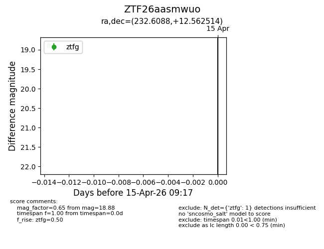
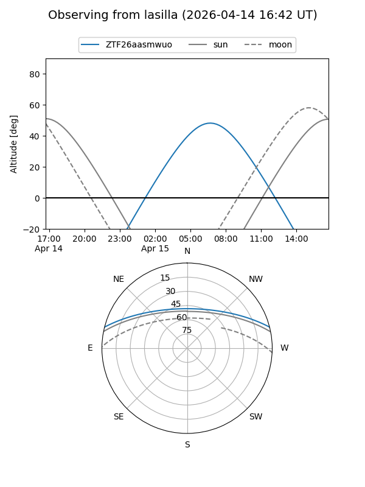
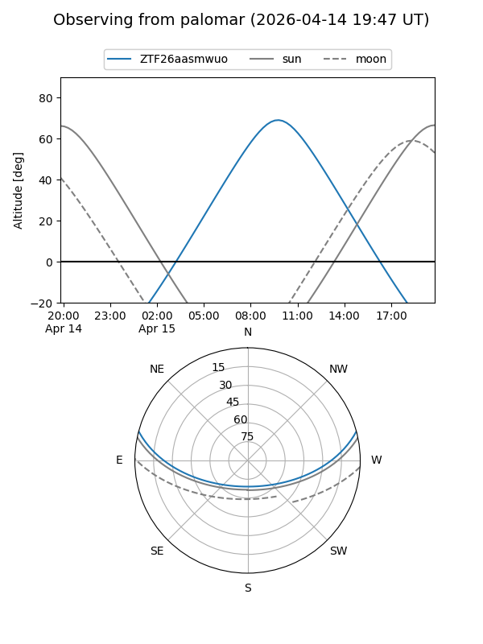

ZTF26aasmwuo
Target ZTF26aasmwuo at 2026-04-15 09:27
Aliases and brokers:
FINK: link
Lasair: link
ALeRCE: link
alt names
ZTF26aasmwuo (ztf,fink_ztf)
Coordinates:
equatorial (ra, dec) = 232.6088,+12.56251
equatorial (HMS+DMS) = 15:30:26.11,+12:33:45.05
galactic (l, b) = (19.5383,+50.09092)
Flags:
Photometry:
last ztfg=18.88
1 ztfg detections
Lightcurve

Visibility


Additional plots